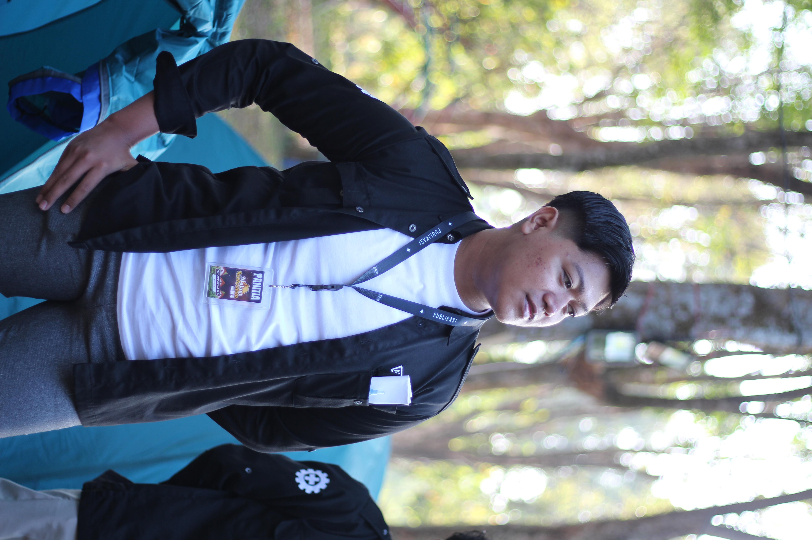
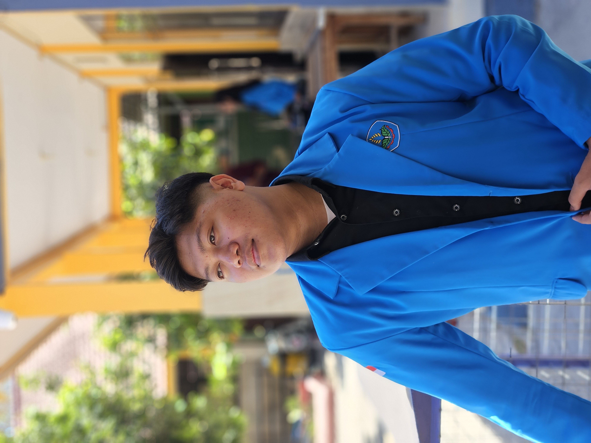

Saya adalah mahasiswa semester 3 D4 Teknik Informatika di Politeknik Negeri Jember (PSDKU Nganjuk) dengan IPK 3,95/4,00. Memiliki keahlian di bidang Web Development, Game Development, dan UI/UX Design. Memiliki pengalaman praktis dalam merancang sistem web berbasis PHP MVC, mengembangkan game edukasi 3D menggunakan Unity (C#) untuk kompetisi nasional, serta mendesain antarmuka pengguna yang interaktif dengan Figma.
Saya juga terlatih dalam kerja sama tim dan manajemen proyek melalui peran aktif pada organisasi kemahasiswaan, khususnya di Divisi Publikasi, Desain, dan Dokumentasi (PDD).
C#, PHP, HTML/CSS, JS, Dart, Unity, Figma
D4 Teknik Informatika
Software Quality Assurance, Workshop Sistem Informasi Web Server, Literasi Digital, Teknologi Basis Data, Struktur Data, Interpersonal Skill, Matematika Diskrit, Workshop Mobile Advance, Kewargenaraan, Konsep Jaringan Komputer, Interaksi Manusia dan Komputer, Workshop Manajemen Proyek, Analisis Desain Beriorientasi Obyek, Intermediate English, Workshop Mobile Applications Basic, Konsep Basis Data, Analisis Desain Terstruktur, Logika dan Algoritma, Workshop Basis Data, Pancasila, Workshop Sistem Informasi Web Client, Basic English.
Jurusan Pengembangan GIM
Informatika, Dasar Dasar Pengembangan Perangkat Lunak dan Gim, Konsentrasi Keahlian: Pengembangan Gim, Projek Kreatif dan Kewirausahaan, Sistem Operasi, Komputer dan Jaringan Dasar.
Game Developer & Project Manager | Mei 2026 - Sekarang
Purwarupa permainan edukasi luring untuk meningkatkan literasi budaya Nusantara melalui mekanika eksplorasi dan fotografi virtual menggunakan Unity.
Web & Backend Developer | Sep 2026 - Sekarang
Mengembangkan platform berbasis web untuk promosi, PWA guru, dan PWA admin, berfokus pada UI, backend, dan API (PHP).
Mobile Developer | Feb 2026 - Jun 2026
Mengembangkan aplikasi mobile pemesanan menggunakan Dart dan PHP, lengkap dengan fitur login, riwayat, dan dashboard admin.
Web Developer | Sep 2025 - Des 2025
Membangun situs pemesanan UMKM menggunakan HTML, CSS, JavaScript, dan PHP beserta fitur pelacakan dan CRUD dasbor admin.
Berperan aktif dalam merancang konsep desain, kebutuhan publikasi, dan tata kelola dokumentasi. Memiliki kemampuan dalam kerjasama tim serta memiliki rasa bertanggung jawab.
Memimpin tim PDD dalam merancang konsep dan mengkoordinasikan pembagian tugas dokumentasi foto dan video selama rangkaian acara berlangsung, serta memastikan seluruh kebutuhan publikasi di media sosial terpenuhi dengan baik.